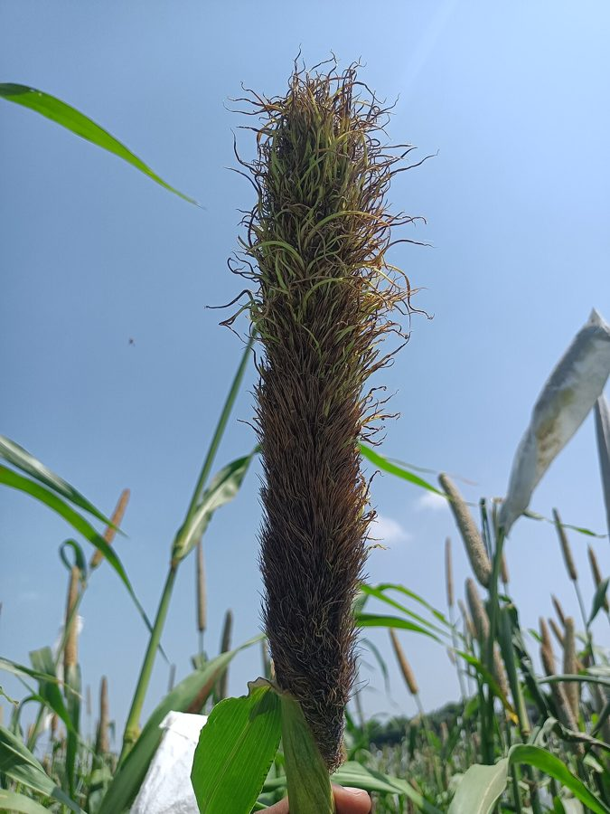

बाजरे का हरित बाली रोगPearl Millet Downy Mildew
Sclerospora graminicola · Peronosporaceae · FNG-0046

- Scientific name वैज्ञानिक नाम
- Sclerospora graminicola (Sacc.) J.Schröt.
- Family कुल
- Peronosporaceae
- Hindi हिंदी
- बाजरे का हरित बाली रोग
- Local names स्थानीय नाम
- bajra harit baali, downy mildew rog, green ear rog
- Status here यहाँ की स्थिति
- native
- Movement आवागमन
- Resident, here all year
- Known from कहाँ दर्ज
- Others have published records from the wider Awadh–Purvanchal plain, none yet from Basti–Ayodhya अवध–पूर्वांचल से दूसरों के प्रकाशित अभिलेख, बस्ती–अयोध्या से अभी नहीं
- IUCN IUCN
- not evaluated
- Review समीक्षा
- not yet reviewed
When to look कब देखें
Expected mainly in June, July, August, September, October. मुख्यतः जून, जुलाई, अगस्त, सितंबर, अक्टूबर में अपेक्षित।
बाजरे का हरित बाली रोग / Pearl Millet Downy Mildew
Sclerospora graminicola (Sacc.) J.Schröt. — Peronosporaceae
बाजरे का हरित बाली रोग — बाजरा तथा काँगनी की फसलों पर लगने वाला एक अत्यंत विनाशकारी कवक जैसा जीव (ऊमाइसीट)। वर्षा ऋतु के नम और गर्म दिनों में यह बाजरे के पौधों पर आक्रमण करता है। पत्तियों के निचले हिस्से पर सफेद-धूसर मखमली रोएँदार परत जम जाती है। रोग का सबसे प्रमुख लक्षण बालियों में दिखता है, जहाँ दानों की जगह पत्ती जैसी हरी संरचनाएँ निकल आती हैं और पूरी बाली झाड़ू जैसी बन जाती है। किसान इसे "हरित बाली" या "बाबा रोग" कहते हैं, जिससे दाने बिल्कुल नहीं बनते।
Quick Identification त्वरित पहचान
| Feature | Description |
|---|---|
| Foliar chlorosis | Distinct pale yellow to vivid chlorotic streaks extending from leaf base |
| Downy growth | Delicate white to ash-grey downy felt on abaxial (lower) leaf surface |
| Systemic symptom | Young leaves emerge entirely pale, showing a classic "half-leaf" pattern |
| Floral transformation | Floral spikelets convert into leafy, twisted, green bract-like structures |
| Panicle appearance | Ear head resembles a compact, bristly green broom ("green ear" phase) |
| Grain production | Complete absence of grain development on affected malformed panicles |
| Leaf shredding | Mature infected leaves tear longitudinally into ribbons, releasing brown dust |
| Survival structures | Innumerable thick-walled golden-brown oospores embedded in shredded tissue |
Field tip: Inspect pearl millet fields in August after humid nights. Look for seedlings with chlorotic yellow lower leaves bearing white down on the underside, and check developing heads for bizarre green leafy tufts in place of grains.
हिंदी — कैसे पहचानें: बाजरे की पत्तियों के नीचे सफेद मखमली फफूंद और बालियों में दानों की जगह हरी पत्तियों का गुच्छा बन जाना। रोगग्रस्त पत्तियाँ बाद में लंबी पट्टियों में फट जाती हैं।
Morphology आकारिकी
Sclerospora graminicola is an obligate biotrophic oomycete producing distinctive asexual and sexual reproductive organs adapted for rapid aerial spread and long-term soil persistence:
- Sporangiophores: Arising through stomatal apertures in compact clusters; stout, erect, hyaline, non-septate, featuring a broad basal trunk that branches dichotomously into short, stout primary and secondary branchlets terminating in conical sterigmata.
- Sporangia: Borne singly on sterigmata; subglobose, oval to broadly ellipsoidal, hyaline, smooth-walled, with a thin non-papillate wall; germinating directly by germ tubes rather than releasing motile zoospores under normal tropical conditions.
- Mycelium: Coenocytic (aseptate), hyaline, branched, proliferating intercellularly through host parenchymal and vascular tissues, extracting nutrients via bulbous to clavate haustoria.
- Oospores: Formed sexually in immense quantities inside dying mesophyll tissue; spherical, thick-walled, golden-yellow to deep reddish-brown, smooth to faintly rugose, surrounded by a persistent adnate oogonial wall that provides extraordinary structural resistance.
हिंदी: सूक्ष्मदर्शी में इसकी शाखाएं पेड़ जैसी दोहरी बंटी हुई दिखती हैं जिन पर अंडाकार बीजाणु लगते हैं। पत्तियों के भीतर बहुत मजबूत, गोल और भूरे रंग के सुप्त बीजाणु बनते हैं जो सालों तक जीवित रह सकते हैं।
Ecology and Substrate पारिस्थितिकी और आधार
Sclerospora graminicola is an aggressive biotrophic pathogen specialized on warm-season photosynthetic cereals:
- Primary host: Pearl millet (Cenchrus americanus, syn. Pennisetum glaucum), causing severe downy mildew and green ear symptoms.
- Secondary hosts: Foxtail millet (Setaria italica) and occasionally wild grasses such as Setaria verticillata in field margins.
- Infection biology: Soil-borne oospores germinate in response to root exudates from emerging seedlings, invading the coleoptile to establish systemic colonization; asexual sporangia drive rapid secondary epidemic cycles during morning fog and dew.
- Soil longevity: Oospores remain viable in dry sandy loam soils for many years, resisting drought, high surface heat, and prolonged fallow intervals.
हिंदी: यह जीव मुख्य रूप से बाजरा और काँगनी की फसलों पर आक्रमण करता है। जमीन में पड़े इसके पुराने बीजाणु नए उगते पौधों की जड़ों में घुस जाते हैं। सुबह की ओस और कोहरे में इसके नए बीजाणु हवा में उड़कर अन्य पौधों को रोगी बनाते हैं।
Life Cycle / Phenology जीवन चक्र
The annual disease cycle encompasses both explosive seasonal air-borne phases and enduring soil-borne dormancy:
| Seasonal Phase | Organism Activity | Agricultural and Climatic Setting |
|---|---|---|
| Sowing / Early Rain | Soil oospores germinate; systemic hyphae penetrate emerging millet coleoptiles | Kharif sowing in warm moist soil following initial monsoon rains |
| Vegetative Tillering | Nighttime dew induces massive sporangiophore emergence and sporangial release | High relative humidity (over ninety percent) promotes asexual spread |
| Heading / Flowering | Systemic infection alters host hormone balance, causing phyllody of spikelets | Green ear symptoms become conspicuous; normal grain filling fails |
| Maturity / Harvest | Mycelium undergoes gametangial fusion; heavy oospore differentiation in leaves | Leaf blades dry, split into ribbons, and shed millions of oospores |
| Dry Months | Oospores persist in surface soil, crop residue, and adhering to seed coats | Unploughed fields endure winter cold and intense summer heat |
हिंदी: खरीफ की बुवाई के समय मिट्टी में दबे बीजाणु सक्रिय होकर नए पौधों में प्रवेश करते हैं। सावन-भादों में पत्तियों पर सफेद रोएँ बनते हैं और बाद में बालियाँ झाड़ू जैसी हरी पत्तियों में बदल जाती हैं। सूखने पर पत्तियाँ फटकर जमीन में बीजाणु बिखेर देती हैं।
Associated Species and Decay Role सहजीवी प्रजातियाँ और अपघटन
Sclerospora graminicola is intricately tied to semi-arid agrarian habitats across northern India:
- Host crops: Strongly associated with cultivated Pearl Millet and Foxtail Millet.
- Botanical interactions: Modifies host physiology so profoundly that floral organs revert to vegetative growth, altering the canopy structure for surrounding weeds.
- Microbial decay: Dying shredded leaves harbouring oospores attract detrital saprotrophs, which digest the cellulosic matrix and liberate the resilient oospores into the soil.
- Ecosystem impact: Regulates productivity in traditional millet-farming tracts, driving the natural selection of resistant host landraces.
हिंदी: यह जीव बाजरा और काँगनी की फसलों से जुड़ा हुआ है। यह पौधे की बनावट को पूरी तरह बदलकर बालियों में दाने बनने से रोक देता है। सूखी पत्तियों के सड़ने से इसके बीजाणु पुनः खेत की मिट्टी में मिल जाते हैं।
Agricultural / Human Relevance कृषि प्रासंगिकता
Pearl millet downy mildew is historically the most economically devastating disease of bajra across the semi-arid tropics:
- Fungal sign: Soft white downy bloom composed of thousands of sporangiophores coating the abaxial side of chlorotic leaves during early morning.
- Crop symptom: Severe seedling stunting, chlorotic foliage, and green ear phyllody resulting in total grain loss on affected panicles; shredded leaves release reddish-brown oospore dust.
- Cultural management:
- Plant certified downy mildew resistant hybrids and practice regular hybrid rotation to avoid breakdown of genetic resistance.
- Rogue out systemically infected seedlings displaying chlorosis before asexual downy sporulation begins.
- Practice deep summer ploughing to bury surface oospores into deeper soil horizons away from emerging roots.
- Adjust sowing dates to ensure flowering occurs when morning humidity and dew duration decline.
- Treat seeds using solar drying on concrete threshing floors to eliminate surface-adhering oospores.
हिंदी: यह बाजरे की सबसे गंभीर बीमारी है जिससे पूरी बाली हरी पत्तियों में बदल जाती है और एक भी दाना नहीं बनता। रोगरोधी बीजों का प्रयोग, बीमार पौधों को खेत से उखाड़कर जलाना और गर्मियों में गहरी जुताई करना इसके मुख्य बचाव हैं।
Expected Locally स्थानीय रूप से अपेक्षित
Not a field record. Written from published accounts for eastern Uttar Pradesh. No confirmed local sighting yet — if you have seen it, that is what the atlas needs.
अभी तक स्थानीय पुष्टि नहीं। यह विवरण प्रकाशित स्रोतों से है, किसी अवलोकन से नहीं।
GBIF holds published records from the wider Awadh–Purvanchal plain, none yet from Basti–Ayodhya. In Awadh, the organism is expected in sandy-loam dryland tracts, village millet plots, and fodder fields where bajra is grown during the kharif season. A confirmed first record requires a clear photograph with place and date submitted through the project portal.
हिंदी: अवध के बलुई दोमट इलाकों में जहाँ बाजरा बोया जाता है, वहाँ खरीफ के मौसम में यह बीमारी देखी जा सकती है। स्थानीय पुष्टि के लिए हरी झाड़ू जैसी बनी बाजरे की बाली की तस्वीर भेजें।
Distribution वितरण
Global range: Widespread in semi-arid tropical and warm temperate zones of Asia, Africa, and southern Europe.
In India: Documented across major bajra-growing states including Uttar Pradesh, Rajasthan, and Haryana (Butler & Bisby 1931; Bilgrami et al. 1979).
In Uttar Pradesh: Known from dryland alluvial plains and sandy tracts during the kharif season.
In Basti district / eastern UP: Expected in kharif pearl millet and minor millet plots across the district.
हिंदी: यह जीव एशिया और अफ्रीका के सभी प्रमुख बाजरा उत्पादक देशों में फैला हुआ है। उत्तर प्रदेश, राजस्थान और हरियाणा के बाजरा उत्पादक क्षेत्रों में इसका प्रकोप अक्सर देखा जाता है।
Research Questions शोध प्रश्न
- What is the breakdown rate of oospore walls in waterlogged alluvial clay soils compared to dry upland sandy loams?
- How rapidly do local virulent pathotypes overcome newly introduced downy mildew resistant bajra hybrids in Awadh? / क्या स्थानीय उग्र विभेद नव-प्रवेशित रोगरोधी बाजरा संकरों की प्रतिरोधकता को तेजी से तोड़ देते हैं?
- What role do wild Setaria grasses along field bunds play in bridging inoculum between consecutive pearl millet seasons?
- Which microclimate variables best predict the transition from vegetative downy mildew to floral green ear symptoms? / कौन से सूक्ष्म-जलवायु कारक हरी बाली लक्षण के प्रकटीकरण को सबसे अधिक प्रेरित करते हैं?
- How does zero-tillage agriculture impact the vertical distribution of viable oospores in agrarian topsoils?
Similar Species मिलती-जुलती प्रजातियाँ
| Species | Primary Host | Panicle Symptom | Asexual Morphology | |
|---|---|---|---|---|
| Sclerospora graminicola | Cenchrus americanus | Green ear phyllody | Stout dichotomously branched sporangiophores | |
| Peronosclerospora sorghi | *[[sorghum\ | Sorghum]] bicolor* | Panicle sterility, no green ear | Globose sporangia with basal apiculum |
| Claviceps fusiformis | Cenchrus americanus | Honey-dew sticky droplets | Sclerotial ergot bodies in spikelets |
Field rule: Look for the green ear malformation: floral spikelets transformed into a dense mass of leafy twisted green structures identify Sclerospora graminicola, distinguishing it from ergot and grain moulds.
हिंदी: बाजरे की बालियों का हरी पत्तियों के गुच्छे में बदल जाना इस बीमारी का अनूठा लक्षण है। अरगट रोग में बालियों से चिपचिपा गोंद जैसा रस निकलता है जो इसमें नहीं होता।
Taxonomy & Classification वर्गीकरण
Original description. Originally described as Protomyces graminicola by Pier Andrea Saccardo in 1876 and transferred to Sclerospora by Joseph Schröter in 1886 (Kryptogamen-Flora von Schlesien, 3(1), p. 236).
Subspecies. Monotypic — no subspecies are currently recognised.
Family and order placement. Belongs to the family Peronosporaceae within the order Peronosporales, class Peronosporea, phylum Oomycota, kingdom Chromista.
Phylogenetic notes. Historically grouped with fungi on morphological grounds, modern phylogenetics places this downy mildew among the heterokont stramenopiles in kingdom Chromista.
IUCN status rationale. Not evaluated globally by the IUCN Red List. It is an oomycete agricultural pathogen with a wide global distribution and no conservation status.
हिंदी: इस जीव का वैज्ञानिक वर्णन 1886 में जोसेफ श्रोएटर ने दिया था। यह फफूंद जैसा दिखने के बावजूद वास्तव में ऊमाइसीट वर्ग का सदस्य है और इसका कोई संरक्षण संकट नहीं है।
Photo Gallery फोटो गैलरी
No photos yet — add field photos to media/species/pearl_millet_downy_mildew/ and run node scripts/sync_photos.js.
Photos needed आवश्यक फोटो
- [ ] Green ear symptom showing leafy malformation of pearl millet panicle (बाजरे की बाली पर हरी पत्तियाँ)
- [ ] White downy growth on the underside of chlorotic seedling leaves (पत्ती के नीचे सफेद मखमली फफूंद)
- [ ] Severe foliar shredding releasing brown oospore dust (पत्तियों का पट्टियों में फटना)
References संदर्भ
- Schröter, J. (1886). In: Cohn, F. (ed.), Kryptogamen-Flora von Schlesien, 3(1), p. 236.
- Butler, E. J. & Bisby, G. R. (1931). The Fungi of India. Imperial Council of Agricultural Research, India.
- Bilgrami, K. S., Jamaluddin & Rizwi, M. A. (1979). The Fungi of India, Part I. Today & Tomorrow's Printers & Publishers, New Delhi.
- GBIF Occurrence Data — Sclerospora graminicola, India (2025).
Source file: species/fungi/molds/pearl_millet_downy_mildew.md